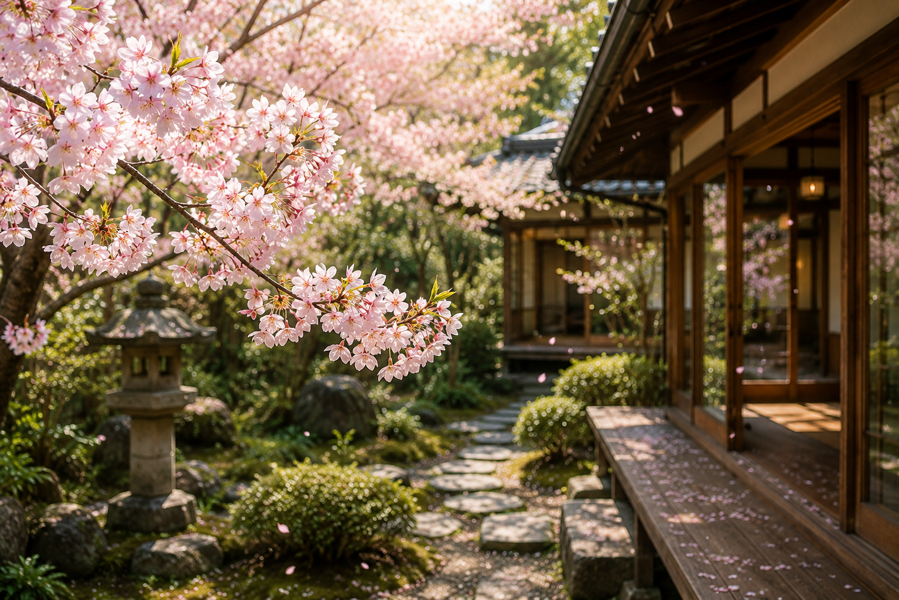
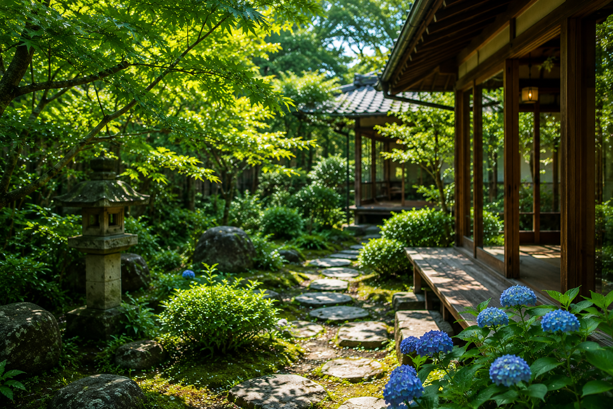

MARCH — MAY
庭の若葉がそよぐ、やわらかな季節。 桜の淡い色合いや、ほのかな甘さの草の香りを映した、 春のやさしい甘味をご用意します。 縁側に座って眺める景色も、いっそう色づく時期です。
- 桜あんみつ
- よもぎ団子
- いちご大福

MARCH — MAY
庭の若葉がそよぐ、やわらかな季節。 桜の淡い色合いや、ほのかな甘さの草の香りを映した、 春のやさしい甘味をご用意します。 縁側に座って眺める景色も、いっそう色づく時期です。

JUNE — AUGUST
苔の緑が深まり、蝉の声がしんと響く山あいの夏。 抹茶蜜のかき氷や、ひんやり透き通る和菓子で、 静かに涼を味わうための甘味をどうぞ。 縁側に吹く風が、なによりのおもてなしです。
SEPTEMBER — NOVEMBER
色づく木々と、ほうじ茶の香ばしい香り。 和栗、芋、ほうじ茶—— 実りの素材を、深い色合いの甘味にして仕立てます。 夕暮れの庭を眺めながら、ゆっくり味わいたい季節です。
DECEMBER — FEBRUARY
静まり返った庭と、囲炉裏のやわらかな炎。 あたたかな抹茶ぜんざいや、ふっくらと炊いた小豆。 ほっと体を温める、冬の甘味をご用意します。 静かな雪の景色とともに、長居したくなる時間です。